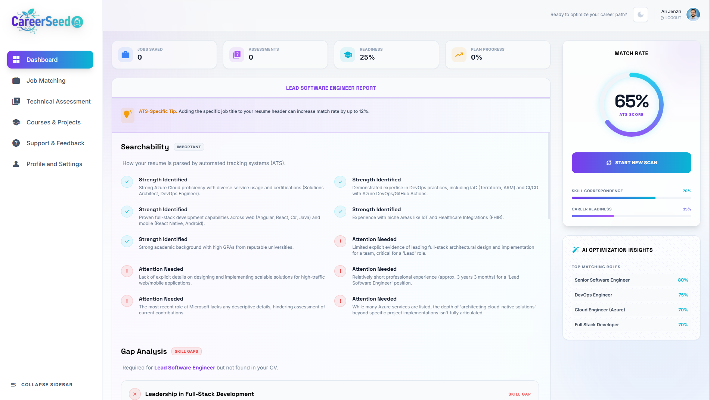

CareerSeed analyse votre profil, optimise votre CV pour les ATS, identifie les offres parfaites et vous prépare aux entretiens — tout en un seul endroit.

Des millions de candidats affrontent chaque jour les mêmes obstacles frustrants.
75% des CV sont éliminés automatiquement par les logiciels ATS avant même d'être lus par un humain.
Des heures perdues à parcourir des centaines d'offres inadaptées à votre profil et vos objectifs.
Manque de préparation, de feedback et de pratique face aux entretiens techniques et RH.
Impossible de mesurer sa progression ou d'identifier les lacunes à combler pour progresser.
Profils invisibles aux recruteurs faute d'optimisation et de positionnement stratégique.
CareerSeed résout tous ces problèmes grâce à l'intelligence artificielle.
Une suite complète d'outils IA conçus pour maximiser vos chances d'embauche.
Notre IA scanne votre CV et le compare aux exigences ATS. Obtenez un score détaillé et des recommandations concrètes pour maximiser votre visibilité.
Notre algorithme analyse 50+ critères pour vous présenter uniquement les offres avec le meilleur taux de compatibilité.
Recevez des conseils personnalisés pour améliorer votre profil, développer vos compétences et booster votre candidature.
Pratiquez avec notre IA qui joue le rôle du recruteur : questions techniques, comportementales et feedback instantané.
Visualisez votre progression en temps réel : candidatures, compétences, scores et objectifs de carrière.
Une expérience utilisateur élégante et intuitive conçue pour vous.

Une démonstration complète de toutes les fonctionnalités en moins de 3 minutes.
4 étapes simples pour transformer votre recherche d'emploi.
Téléchargez votre CV en PDF ou Word. Notre IA l'analyse instantanément.
Précisez vos critères : secteur, niveau, localisation, type de contrat.
Notre IA optimise votre CV, identifie les meilleures offres et prépare votre stratégie.
Postulez en confiance, préparez-vous aux entretiens et suivez votre progression.
Réduisez votre temps de recherche de 80% grâce à l'automatisation intelligente et aux recommandations ciblées.
Postulez uniquement aux offres qui correspondent vraiment à votre profil avec un taux de réponse 3x plus élevé.
Chaque recommandation est adaptée à votre parcours, vos compétences et vos objectifs de carrière uniques.
Un CV optimisé ATS qui passe tous les filtres automatiques et attire l'attention des recruteurs qualifiés.
Des milliers d'utilisateurs ont transformé leur carrière grâce à notre plateforme.
"CareerSeed a complètement changé ma façon de chercher un emploi. Mon score ATS est passé de 42% à 89% en quelques heures. J'ai reçu 3 entretiens la semaine suivante !"
"La simulation d'entretien est incroyable. J'ai pu m'entraîner des dizaines de fois avant mon entretien chez une grande entreprise. Résultat : j'ai eu le poste !"
"En tant que développeur junior, le matching d'offres m'a sauvé. Plus besoin de passer des heures sur LinkedIn. CareerSeed me présente exactement ce que je cherche."
Tout ce que vous devez savoir sur CareerSeed.
Oui ! CareerSeed propose un plan gratuit qui inclut l'analyse de base de votre CV, 5 matchs d'emploi par mois et un accès limité à la simulation d'entretien. Pour un accès illimité, découvrez nos plans premium.
Notre IA analyse votre CV selon les mêmes critères que les logiciels ATS utilisés par les entreprises : mots-clés, format, structure, sections obligatoires et cohérence du parcours. Vous obtenez un score détaillé et des recommandations prioritaires.
Absolument. Vos données personnelles et votre CV sont chiffrés et ne sont jamais partagés avec des tiers sans votre consentement explicite. Nous respectons le RGPD et les normes les plus strictes en matière de protection des données.
CareerSeed est disponible dans tous les pays francophones (France, Maroc, Algérie, Tunisie, Belgique, Suisse, Canada…) et s'étend progressivement à d'autres marchés. Le matching d'emplois est adapté à votre localisation.
La plupart de nos utilisateurs voient une amélioration significative de leur score ATS dès la première session (en moins de 30 minutes). Les premiers entretiens arrivent généralement dans les 2 à 4 semaines suivant l'optimisation du profil.
CareerSeed est entièrement responsive et fonctionne parfaitement sur mobile. Une application native iOS et Android est actuellement en développement et sera disponible prochainement.
Commencez gratuitement aujourd'hui. Aucune carte de crédit requise.
Résultats visibles dès la première session.